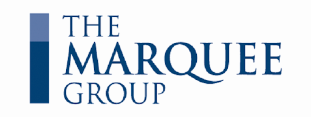

A Timeline of My Life; Check Out My Blog at AndyZhang.me
Courses: CS 486: Introduction to Artificial Intelligence (UW) CS 490: Information Systems Management (UW) CS 492: The Social Implications of Computing (UW) BUS 400: Advanced Equity Analysis I (WLU) BUS 491: Business Policy II (WLU) BUS 493U: Financial Markets and Securities Trading (WLU)
Term Overview:
The term ended hecticly with the disruption of in-class courses caused by COVID-19. Despite this, the professors and the university pulled through, and I was able to finish the term online on a strong note. I did have time to sneak in a conference before the pandemic fully hit Canada; I attended the Canadian Undergraduate Conference on AI, where I listened to various talks and workshops, such as a keynote by Geoffrey Hinton.
Waterloo Courses: CS 341: Algorithms - I learned to appreciate effective algorithm design; I learned about different practical techniques such as greedy algorithm and dynamic programming, as well as more theoretical techniques, such as proving bounds of algorithms and hardness of problems. CS 348: Introduction to Database Management - I learned to design and manage effective databases with practical skills such as drawing E/R diagrams and writing queries with SQL. I also learned about database theory, such as BCNF proofs and relational algebra/calculus. My group's final project consisted of a CLI version of Pokémon, built with Java and embedded SQL. CS 350: Operating Systems - I learned about different parts of the OS, such as synchronization primitives, process system calls, and virtual memory. I learned about the theory and history behind many techniques in modern-day systems and the assignments consisted of implementing said techniques by building different parts of a simplified OS, OS/161.
Laurier Courses: BU 481: Business Policy I - I learned about higher-level business strategy formulation and frameworks, such as the Diamond-E and VRIO analysis; I wrote reports and participated in discussions of business strategy cases. BU 493V: Investment Strategies - I learned a great deal about different hedge fund investment strategies, from managed futures to merger arbitrage; I analyzed data and completed exercises in Python, such as backtesting trading strategies.
Laurier JDCC:
This year's JDCC competition was held in St. Catharine's at Brock University's Goodman School of Business; through the 4AM wakeups and the earth-shaking cheers and dances, it was certainly an exhilerating weekend. The Digital Strategy team placed third and the overall Laurier competitive case comp team won both Academic School of the Year and Overall School of the Year. Our hard work had paid off.
Laurier Courses: BU 480T: Case Competitions - This was the course associated with Laurier JDCC (please see below).
Extracurricular Courses: Deep Learning Specialization (deeplearning.ai) - I completed the five course specialization in deep learning. I learned about various aspects of deep learning, from how to effectively structure projects to hyperparameter tuning. I completed various projects in fields such as convolutional neural networks and sequence models, both with TensorFlow and Keras in Python.
Laurier JDCC:
I returned to Laurier's competitive case competition team, this time as a Digital Strategy Delegate to compete in cases with a MIS focus; I attended training sessions every weekend to crack cases and receive feedback from peers, industry mentors and professors; although it was brutal busing and ridesharing from Toronto to Waterloo and back every weekend, I gained a great deal of knowledge about emerging technologies, change management, and how to construct a more compeling narrative in presentations.
Elevate TechJam:
I had the opportunity to attend the Elevate Tech Festival and compete in the Elevate TechJam.
My team and I built Grow, a microfinancing app aimed at empowering communities through education. Although we did not place first, we did win tickets to see Michelle Obama live. I was surprised at how vibrant the Canadian tech ecosystem is and I had opportunities to meet with and learn from many successful founders.
McKinsey Challenge:
I had the honour of winning the Toronto McKinsey Challenge hosted by McKinsey & Co.
My team and I worked with McKinsey mentors develop a solution for a non-profit focused on the growth of the Canadian population. Our policy solution was focused on growing the Canadian tech ecosystem through partnering post-secondary schools with Canada-based tech companies, and supporting non-conventional sources of tech education such as coding bootcamps. It was very insightful to learn about McKinsey's famous problem-soling approach and I learned many new leadership techniques, such as how to break the ice when working with a new team and how to give better feedback and criticism as a team.
Co-op Term:
I had the opportunity to explore alternative assets while working as a Private Equity Analyst at Waratah Capital Advisors.
I worked as a part of a two-person investment team with a mandate to purchase RV resorts across Canada. I was very fortunate to have an amazing boss and mentor who was kind enough to share his decades of experience and expertise in making deals. I worked on all aspects of the M&A deal process, from constructing LBO and CCA tax schedule models, to preparing presentations, analysis, and forecasts for board and investment committee meetings. I also worked on ad hoc assignments, such as constructing a proprietary database of all RV resorts in Ontario and conducting due diligence assessments. I really enjoyed the versatility of the role as I had the opportunity to work on the operational side of the business, such as engaging with portfolio resort managers to establish budgets and processes. Through this term, I learned a great deal about operating a business and investing in real estate.
Term Overview:
I was extremely productive this term, having completed various courses on topics which I'm interested in. In particular, I became very bullish on the field of machine learning after learning about the technical details of the different algorithms, and recognizing how seemingly simple they are: just throw data at an algorithm and it calibrates itself. I believe that the incredible things which can be accomplished by such a simple concept is astounding, and we are only witnessing a small fraction of what is possible. In this term, I also took part in the Integrated Case Exercise (ICE), the 3rd-year Laurier case competition; my team and I went to the semi-finals by recommending a smart city strategy for the region of Kitchener-Waterloo.
Waterloo Courses: CS 240: Data Structures and Data Management - I learned about different data structures such as priority queues and self-balancing trees. I also learned about different algorithms, ranging from sorts and searches, to transformations for encryption and compression.
Extracurricular Courses: Machine Learning (Stanford University) - I learned about the different processes in ML, from datamining to checking whether the outcomes of the algorithms are valid. I learned about both supervised (SVMs, kernels, etc.) and unsupervised (clustering, dimensionality reduction, etc.) learning. I completed practical projects such as anti-spam filters and computer vision in MATLAB. Financial Engineering and Risk Management Part I (Columbia University) - I learned about how to use stochastic models to price derivatives in various asset classes, such as equities, fixed income, and mortgages. Financial Engineering and Risk Management Part II (Columbia University) - I learned about how to use stochastic models to solve portfolio optimization problems, and I also learned about the applications and limitations of different models.
Laurier Courses: BU 362: Building and Managing Products, Services and Brands - I learned to apply marketing concepts to real-world scenarios through numerous case studies. I participated in discussions and presentations surrounding the cases and formulated marketing strategies. BU 375: Operations Management - I learned about the different aspects of operational decision-making. I learned about the theory and models behind concepts such as resource and capacity planning, lean operations, and project management. BU 398: Organizational Behaviour II - I learned about management theory on an organizational level. I learned about different organizational structures and processes and I applied said concepts on case studies and simulations. BU 461X: Management Consulting Practicum - This was the course associated with the Laziridis Management Consulting Practicum (please see below).
Laziridis Management Consulting Practicum:
I was selected for a program where I had the opportunity to work as a pro bono management consultant on a real world mandate while being mentored by industry consultants. I learned many consulting skills, such as how to plan and execute a project and how to interact with clients. For my team's mandate, we created a framework for evaluating different autism service delivery models for a Toronto-based nonprofit organization. My team and I conducted interviews with therapists and researchers from around the world to gather qualitative and quantitative data, and we compiled the data into a report for our client.
Laurier Courses: BU 461U: Competitive Case Analysis & Presentation B - January was the actual JDCC competition at the Univerity of Guelph. My team finished in the semi-finals in our category while Laurier only came second. Despite this, I felt that overall it was still an amazing experience, being able to learn to be a more effective speaker and communicator and being able to compete with high-caliber teammates.
Co-op Term:
I had the amazing opportunity to work as a Research Analyst at Cambridge Global Asset Management.
I had excellent mentors who showed me the ropes of investing, from using Bloomberg and FactSet, to building three-statement models and interviewing company directors. I had a lot of freedom to conduct my own research and form my own conclusions about different companies. I also undertook projects such as using VBA to build data-visualization tools on portfolio metrics. My greatest takeaway from this work term, however, was not the financial/investing knowledge, but the Cambridge mentality, to be humble, to abhor complacency, and to be conscientious of one's own work and responsibilities. Overall I had an incredible time at Cambridge and although I learned a great deal about investing and research, I realize that I have yet to scratch the surface on all the knowledge about markets and equities; there is much to learn.
Term Overview:
I felt that I grew a great deal during this semester; I was able to allocate my time and energy more effectively and as a result, I was able to be more productive and more impactful, especially with extracurricular activities. I attended Queen's Finance Association Conference where I had the opportunity to attend workshops such as the Discounted Cash Flow Analysis run by the Marquee Group.
My team and I also finished as finalists for the Burgundy Asset Management Stock Pitch. During the term, I also completed several courses offered by BIWS, including Excellence with Excel 2.0 and Financial Modeling Fundamentals.
Waterloo Courses: CS 241: Foundations of Sequential Programs - I learned about how high-level languages interact with computer architecture; I learned about components such as assemblers, linkers and loaders, and parameter passing mechanisms. For the assignments, I made a compiler which translates a C-like language into MIPS. CS 251: Computer Organization and Design - I learned about both theoretical and practical concepts surrounding computer hardware, such as digital logic design, numerical computation at the logical level, and processor design.
Laurier Courses: BU 352: Introduction to Marketing Management - I learned about consumer and environmental analysis, marketing strategy, and different components of the marketing mix. I learned about frameworks such as the product life cycle and the AIDA model and applied said frameworks on cases. BU 354: Human Resources Management - I learned about the different functions of HR, such as staffing, training, and determining compensation. I practiced practical skills such as job analysis and I learned about both employer and employee rights. BU 393: Financial Management II - I learned about more long-term analysis of a company, such as the capital structure, cost of capital, and mergers and acquisitions. I also learned about finance theory, such as Modigliani–Miller propositions. BU 461U: Competitive Case Analysis & Presentation A - This was the course associated with Laurier JDCC (please see below).
JDCC Laurier:
I was selected to compete as a Parliamentary Debate delegate for Laurier's prestigious competitive case competition team.
I trained weekly with coaches who are professors and alumni. I learned a great deal about social and political issues and I had many opportunities to volunteer in the community, such as with the Laurier Food Bank food drive.
Double Degree Club:
I decided to be a mentor for first year double degree students.
I personally had an extremely difficult time adjusting and succeeding during my first year in university, so I thought it would be a great if my experiences and insights from my own (disastrous) first year can deliver value to others who are about to go into double degree. It was great hanging out and chatting with first-year students and helping them avoid some of the pitfalls which I experienced during my first year in university.
Students Offering Support:
I volunteered as an instructor for the EC 120 (Introduction to Microeconomics) course.
It was pretty interesting to be on the other side of the podium; I definitely sympathize much more with profs who have to talk for hours without break. Economics was always something that interested me so it was fun teaching it to first-year BBA and Economics students; I learned many tricks to be a better teacher, including finding relatable examples and connecting with students on a personal level by avoiding overly complex language. With a partner, I held 4 exam review sessions with over 600 students attending and raised over $12,000 towards charity.
Term Overview:
I was extremely busy this term with both my course load and my extracurriculars. The courses I took this term were very theoretical, but I learned a great number of concepts which reshaped my perspective on math and programming. I also found it very exciting and inspiring to work with my peers in student societies who are dedicated to helping others in their academic journeys.
Waterloo Courses: CO 250: Introduction to Optimization - I learned about many core concepts which allow the application of mathematical optimization models to real-world problems. I learned about linear programming and proofs on optimality and bounds. I also learned about different theorems, such as strong and weak duality, and KKT conditions. CS 245: Logic and Computation - I learned about theoretical CS concepts such as logic (both propositional and predicate) and proofs on program correctness and decidability. MATH 239: Introduction to Combinatorics - I learned how to count properly, with concepts such as generating series, strings, and trees. I also learned about graph theory, with problems on colourings, matchings, and connectivity
Laurier Courses: BU 231: Business Law - I learned about the legal frameworks behind businesses in Canada. I learned about the specific legislations which are relevant for businesses, such as contract and franchise laws. I also studied and analyzed court decisions to understand the practical applications of the laws. BU 247: Managerial Accounting - I learned about accounting from an internal stakeholder perspective, with an emphasis on business planning, decision-making, and performance evaluation. I learned concepts such as activity-based costing and flexible budgeting.
Quantify 2018:
My team placed second out of the 25 teams selected to compete in the Quantify Risk and Insurance Case Competition. The theme in the 2018 competition was how to mitigate climate change risk for insurance underwriters. Using risk models to analyze climate change data, my team came up with an elegant solution to implement an accelerated underwriting method in order to more accurately price insurance premiums based on climate change risk for specific regions.
Laurier Student Union Team Lead:
I was selected to be on the Clubs Governance Committee and lead the Special Events Funding Team for the 2018-2019 year.
With my team, I approved budgets from various clubs and societies who wanted funding for their events. I interviewed the organizers and audited their cost projections. I also participated in committee activities, such as the approval of new student clubs.
MathSoc VPF:
I was selected to be the Vice President of Finance for the Mathematics Society at the University of Waterloo, a student organization representing the over 7,000 students in the Mathematics Faculty.
I administered the Operating Fund, as well as the Capital Improvements Fund, totalling over $300,000. I sat on the board of the Math Coffee and Doughnuts, the faculty café, and administered the Math CnD bank account. I also drafted and approved various budgets and managed a team of a dozen Finance Directors to oversee the financial operations of the society. Finally, I participated in the Math Council, the executive decision-making body for Math students and I proposed policies which were enacted. I was very humbled to receive an honorarium for my services.
Waterloo Courses: STAT 231: Statistics (Online) - I learned about the theories behind statistical empirical experimentation, such as both numerical and graphical methods for summarizing data and checking for statistical model fit. I also learned to visualize data and perform analysis, such as Gaussian and linear regressions and Chi-squared tests, both by hand and with R.
Other Courses:
I completed the Bloomberg Market Concepts (BMC) certification, learning about different market concepts such as economic indicators while learning to use over 100 functions on the Bloomberg Terminal.
Co-op Term:
I worked as a Marketing Analyst Intern at Blackhawk Network, a company in the gift card and payments industries.
This job gave me exposure to various business functions; I handled a variety of duties, ranging from traditional marketing tasks such as forecasting promotional sales and working with graphic designers to create flyer ads, to operations tasks such as analyzing monthly merchandising reports and diagnosing why sales of certain product lines were stagnant in some markets. I was also responsible for many important projects, such as performing analysis on multi-million dollar promotions and presenting, as well as discussing, the findings with both the VP and the client. Finally, I undertook many ad hoc projects, such as automizing reports with VBA, performing analysis to optimize planograms, and representing Blackhawk at conferences and tradeshows such as the McKesson Showcase 360°. Overall, this work term was a very productive experience, as I was able to experience various aspects of the business world.
Term Overview:
During this term, I felt that I was much more comfortable with my class workload and I was able to dedicate time to hobbies such as learning about films by taking The Film Experience course offered by MIT OpenCourseWare. I also attended various career workshops as a part of my co-op program on topics such as résumé writing and proper business etiquette.
Waterloo Courses: CS 246: Object-Oriented Software Development - I learned about all aspects of software development, from writing Bash scripts and Makefiles to actually designing and writing code. I learned about useful tools, such as Git and UML. I also learned good practices, such as documenting and compartmentalizing code and using design patterns. For our final project, my team made a functional version of Tetris in C++, complete with a GUI and a bot which plays the best moves. STAT 230: Probability (Online) - I learned about foundational statistical concepts such as Bayes' Theorem and different distributions, such as binomial, multinomial, and Poisson. I also learned about different statistical functions. from different probability functions (joint, marginal, etc) to moment generating functions.
Laurier Courses: BU 127: Introduction to Financial Accounting - I learned about core financial reporting concepts such as the three major statements and the differences between different reporting standards. I also learned how to analyze a company's finances through different metrics and ratios. BU 283: Financial Management I - I learned about valuation concepts such as TVM mathematics, risk management concepts such as portfolio theory and credit analysis, and general financial analysis such as calculating and forecasting different metrics, such as FCF and stock option values. BU 288: Organizational Behaviour I - I learned about factors which affect individuals and groups, ranging from different psychological biases to different management theories and styles, such as the Goal-Path model. I participated in simulations and analyzed case studies to apply the concepts learned.
Laurier Courses: EC 250: Intermediate Macroeconomic Analysis for Management (Online) - I learned about the different determinants of business conditions, such as the impact of exchange rates, in order to make macroeconomic forecasts and evaluate government policies. I learned about different case studies, such as the Great Recession, and learned how different economic theories, such as the Keynesian consumption function, applies to each case.
First Internship:
My first internship was as a Corporate Banking Intern at China Merchants Bank.
My duties included handling different aspects of client-facing situations. From pitching new financial products to delivering tutorials on new systems, I had contacted over 1000 corporate clients, ranging from start-ups to multi-billion-dollar corporations. I had two main objectives for pursuing an internship in China: I wanted to improve my Mandarin and I wanted to acclimate myself to the Chinese business environment. My proficiency in Mandarin certainly improved through practice, such as creating pitch decks in both English and Mandarin, and I learned a great deal about how business is conducted in China, such as the emphasis on courtesy (礼) and personal connections. I believe that China will continue to play a larger role in the global economy, and this internship has given me crucial insights and skills to understand how this market works.
Term Overview:
My second semester at university was a trial and error process. I dedicated time to cultivating proper work ethics and discpline. I felt that I was much more deliberate in everything I did and as a result I had more time to engage in extracurriculars. I was invited to participate in the Undergraduate Mock Trials organized by CLAUSE, where I learned a great deal about legal trials, and my team broke through the prelims.
I also had time to participate in workshops, such as the Building a Financial Model of a Company offered by the Marquee Group.

Waterloo Courses: CS 136: Elementary Algorithm Design and Data Abstraction - I learned how to design and analyze algorithms with core CS concepts such as the Big-O notation and abstract data types. I learned how to manipulate different data structures such as trees, stacks, and queues. This course was taught in an imperative language (C). MATH 136: Linear Algebra I for Honours Mathematics - I learned about core lin alg concepts such as matrix algebra. I learned both proofs and computations on topics such as linear transformations and different spaces (vector spaces, real coordinate spaces, etc). MATH 138: Calculus II for Honours Mathematics - I learned many interesting techniques for integrating/deriving equations, such as Riemann integrals and improper integrals. I learned to do calculus proofs, such as on seperable differential equations and tests for series convergence.
SPCOM 223: Public Speaking - I took part in many workshops such as writing critiques of presentations and performing an improptu rant in public. I also learned to read academic writing, particularly in the philosophy and social sciences fields.
Laurier Courses: BU 121: Functional Areas of the Organization - I learned about different business functions such as marketing and operations. I applied what I learned on my group's New Venture idea (selling vibrating pillows) by developing and thinking through the different aspects of a business plan. I practiced business skills such as report writing, interviewing and surveying potential customers, and pitching to and negotiating with potential investors. EC 140: Introduction to Macroeconomics - I learned about the drivers behind national economies, with a focus on the determination of national income. I learned the theories and models behind important economic drivers for a country, such as unemployment, price stability, and government policies.
First Case Competition:
The first case competition I ever took part in was the annual XCelrate Laurier Case Competition. The case was about making the decision of opening/closing a running shoe business and a gym. Although my team and I only placed 3rd in the competition, it sparked my interest in case analysis and competitions.
Joined MathSoc:
I volunteered for the University of Waterloo's Mathematics Society, the organization governing students from the Math Faculty. My position was Events Director and I was in charge of organizing, and coordinating various events, such as the Valentine's Extravanganza and Mock Interviews/ Résumé Critiques. I marketed the events through Facebook and also hired volunteers to help run the events.
Term Overview:
I'd be lying if I said that my first semester at university was easy; I had a tough time finding a balance in my hectic university schedule running between two campuses and I had a proverbial "trial by fire" learning to code for the first time. Furthermore, having only gotten grades of 90+s in high school, getting grades in the 70s and 80s in university really took down my confidence. Despite this, I felt that I progressed much in this term, not only academically, in picking up programming, but also in terms of perspective. I learned to be humble, to have humility in both success and failure, and to not compare my personal progress with others'. I attended several debate club meetings and played some intramural basketball, but I mainly spent time alone in the gym or reading philosophy. Overall, it was clear that I needed to grow and adapt.
Waterloo Courses: CS 135: Designing Functional Programs - Having never written a single line of code before university, I learned a great deal about the fundamentals of programming. I learned about how to think logically and how to code, with an emphasis on recursive functions and edge-case testing. The course was taught in the beginner-friendly but commercially useless language of Dr. Racket. MATH 135: Algebra for Honours Mathematics - This was my first taste of "real math", having to actually think critically to solve the problems. I learned a great deal about the seemingly archaic language of mathematics as well as proof techniques such as contrapositive and induction. MATH 137: Calculus I for Honours Mathematics - Having taken IB math in high school, a substantial portion of this course was review for me. Despite this, I still learned a great deal about different problem solving techniques, such as Newton's method, as well as core calculus concepts, such as Taylor polynomials.
Laurier Courses: BU 111: Introduction to Management and Business Organization - I learned about core business concepts such as PEST and basic financial analysis. I applied the concepts on activites during weekly labs, as well as on the New Venture project, where groups come up with a novel venture idea (my group's idea was a vibrating pillow). EC 120: Introduction to Microeconomics - I learned about core concepts affecting the decision making of individual people and firms in a market economy, such as supply and demand, and opportunity cost. I also learned how government policies can affect individuals through analyzing different graphs and cost curves.
Started University:
I chose to attend the dual degree program with a Bachelor of Computer Science from the University of Waterloo and a Bachelor of Business Administration from Wilfrid Laurier University. I obtained the President's Gold Scholarship from Wilfrid Laurier University, for having an entrance average of 95+%.
TedxOgilvieRd:
I helped establish, coordinate and organize a TedxYouth conference.
I contacted and pitched to businesses for sponsorships and partnerships; I marketed the event through managing the Facebook page and coordinating the creation of creative content, such as promotional posters. I also helped out with the logistics of the event, including finding a suitable location and setting up the audio/video equipment on the day of the conference. The conference was a success, with over 100 paying attendees; the City of Ottawa (in particular the Ottawa Public Libray) even proposed a potential partnership should the event be run again in the future.
Graduated High School:
I completed the International Baccalaureate program (French Immersion) at Colonel By Secondary School (4.0 GPA).
IB Courses Taken:
- History (learned HL, took SL exam)
- English (learned HL, took HL exam)
- Mathematics (learned SL, took SL exam)
- Physics (learned HL, took SL exam)
- Chemistry (learned HL, took HL exam)
- French (learned HL, took HL exam)
- Theory of Knowledge
Certifications & Diplomas:
- Ontario Secondary School Diploma
- International Baccalaureate Diploma
- French Immersion Certificate
- Grade 12 Mandarin
Awards: - Honour Society (for maintaining 80+ average) - OCDSB Silver Medal (for maintaining 90+ average) - IB2 History Award (for achieving the highest grade in the IB2 History course)
Organized Classes for Seniors:
After observing the difficulties our grandparents experienced in their day-to-day activities when coming to visit us in Canada, my friend and I decided to start a course to teach Chinese seniors English. We partnered with the Ottawa Chinese Community Service Centre, which provided us with resources, such as a classroom and teaching supplies. My friend and I recruited two of our peers and, together, created lesson plans as well as lesson hand-outs. The lessons were a huge success and we started a second course, to teach Chinese Seniors how to use digital technology. The courses were featured in articles in local Chinese community newspapers and we made many meaningful connections with our elderly students.
Participated in Politics:
Growing up in Ottawa, it is inevitable to get involved in politics; in the summer of 2015, I volunteered for Andy Wang, a federal candidate from a major political party running for office. I canvassed over 200 houses and called over 400 constituents; I also helped with administrative duties, such as coordinating volunteers, and setting up computers. This experience gave me great insight into the Canadian political process and what it means to participate in politics.
Volunteered with Kiva:
I joined the Kiva chapter at my high school. Kiva is a microfinancing organization which loans funds to low-income entrepreneurs, usually in third-world countries.
The business model of Kiva really appealed to me as I found it more sustainable and more practical than traditional, donation-based, non-profit organizations. As an executive member of the club, I organized fundraisers, such as bake sales and intramural sports tournaments. I represented my high school's Kiva club at the Ottawa Carleton District School Board's first annual International Education Info-Fair.
Started Debating:
My debating journey started in the debate club of my high school. Debating has helped me boost my confidence speaking and overcome my fear of public speeches. I competed in both Canadian and British Parliamentary styles. Initially, I had trouble just filling up my speaking time, but eventually, after competing in tournaments and practicing rhetorical frameworks, I was selected by the Ontario Student Debating Union to compete in the Provincial Debate Championships for the Bilingual Debate category in my senior year of high school. I continued to participate in some debate tournaments in university, such as placing second both overall and individually at the Royal City Debate Tournament at the University of Guelph.
Started High School:
I was fortunate to be accepted to attend Colonel By Secondary School, at the time the only public International Baccalaureate high school in Ottawa.
The daily bus commute of 3+ hours was well worth it as I had an incredibly rewarding experience. Clubs and Activities: French Club (President; tutored fellow students in French, and organized French activities, such as French movie viewings and French board game sessions) Kiva (Executive Member; organized fundraisers, and loaned money to low-income entrepreneurs) Book Club (Senior Member; read books and participated in book discussions) Debate Club (Senior Member; participated in debate competitions, and mentored junior debaters) Colonel By Food Drive (Organizer; coordinated volunteers for the annual school food drive) Track and Field (Team Member; competed in Javelin, Discus and Shot-put)
Volunteered As Camp Counselor:
I obtained my Basic First Aid and CPR Certifications, and spent my summer volunteering as a Camp Counsellor for the City of Ottawa.
I organized activities for over 50 campers, and supervised campers on excursions. I have always enjoyed attending summer camps, so I wanted to give back to the wonderful community.
Completed Kumon:
Yes, I was that guy; I got the G by 5 Award and even received the engraved clock for finishing the Reading program.
Enlisted in the Royal Canadian Air Cadets:
In the Royal Cadets Air Cadets program, I obtained the rank of Sergeant within the 211 Ottawa Kiwanis Squadron.
I learned much about leadership and discipline, and I was placed in charge of a flight of junior cadets. I also participated in activities such as biathlon, and marching in the National Remembrance Day Ceremony.
First Math Contest:
My first math contest was the Grade 6 Math Kangaroo, for which I placed first in Ottawa, and second nationally.
I participated in a couple more math contests after the Kangaroo, such as the Gauss Mathematics Contest, where I placed first for my school. Although my interest in math contests tapered off after middle school, my passion for math remains.
First Job:
I am a strong believer of hard work; I got my first job at age 10, as a newspaper delivery personel for Metroland Media.
Although being a paperboy required very little skill (inserting flyers into the newspaper, and delivering the paper), and paid very little (around 10¢ per house), I am proud to say that I never missed a single delivery, rain (snow) or shine. This job has taught me the importance of responsibility, and the significance of money.
Joined Scouts Canada:
I joined the Cub Scouts, and later the Scouts program as a member of the 1st Nepean Troop. I learned to appreciate and cherish nature and being outdoors through partaking in activities such as hiking, canoeing, and camping. I have learned many valuable survival skills, and earned many badges along the way. I particularly enjoyed the community involvement aspect of the Scouts program, such as park clean-ups, and volunteering in senior homes.
Growing up I had many opportunities to stay active and try new sports. I learned many invaluable skills such as teamwork and perseverance. Here are some of the activities I partook in: Hockey (Left Wing; Nepean Minor Hockey Association) Soccer (Full Back; Nepean City Soccer Club & Ottawa South United Soccer Association) Alpine Ski Badminton (Doubles & Singles; Soong Badminton Academy) Swimming Taekwondo (Black Stripe; International Taekwondo Federation) Table Tennis (Singles; Trained under Geng Lijuan)
Picked Up the Violin:
Music is a lifelong passion of mine; I have a profound appreciation for all genres of music, ranging from classical to rock, from hip hop to folk. I especially relish in discovering new, niche, genres of music, such as Calypso music from Trinidad and Tobago (check it out!). I have also learned other instruments, such as the piano, the alto sax, and bongo drums.
My certifications include:
- Level 8 Royal Conservatory of Music (Violin)
- Advanced Rudiments (First Class Honours with Distinction)
Favourite composer: Niccolò Paganini
First Art Competition:
I used to compete in art competitions, such as the City of Shenzhen Children's Painting and Calligraphy Exhibition (深圳市少儿书画荟萃系列展), where I placed first in multiple categories. Check out one of my earliest pieces:
I have always had an immense appreciation for visual arts; from Caravaggio to Kusama, I believe that art serves both as a medium for expression and inspiration, and is as relevant as ever in our society.